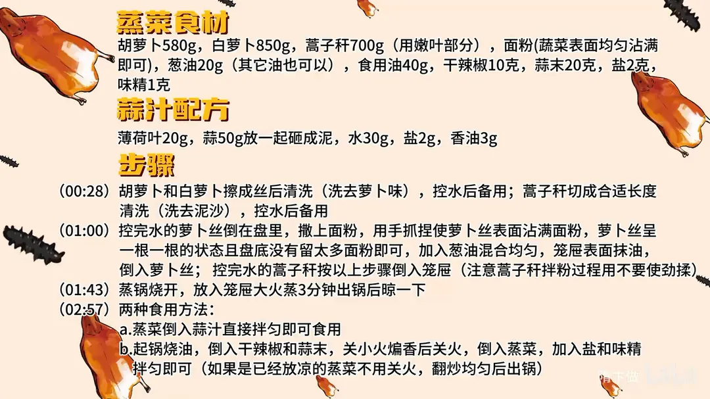

河南蒸菜
隋卞一做。胡萝卜 580g、白萝卜 850g、蒿子秆 700g 擦丝洗净控干，抓粉拌到根根分明，只蒸 3 分钟；吃法一是直接拌薄荷蒜汁，二是干辣椒蒜末小火炝锅后拌入。
原视频：https://www.bilibili.com/video/BV1nb421e7tJ
食材
胡萝卜、白萝卜 等 15 样
| 类别 | 用料 | 用量 |
|---|---|---|
| 主料 | 胡萝卜 | 580g |
| 主料 | 白萝卜 | 850g |
| 主料 | 蒿子秆 | 700g（用嫩叶部分） |
| 辅料 | 面粉 | 蔬菜表面均匀沾满即可 |
| 辅料 | 葱油 | 20g（其它油也可以） |
| 辅料 | 食用油 | 40g |
| 调料 | 干辣椒 | 10g |
| 调料 | 蒜末 | 20g |
| 调料 | 盐 | 2g |
| 调料 | 味精 | 1g |
| 蒜汁 | 薄荷叶 | 20g |
| 蒜汁 | 蒜 | 50g |
| 蒜汁 | 水 | 30g |
| 蒜汁 | 盐 | 2g |
| 蒜汁 | 香油 | 3g |
步骤
- 擦丝清洗：胡萝卜和白萝卜擦成丝后清洗，洗去萝卜味，控水备用；蒿子秆切成合适长度，洗净泥沙，控水备用。
- 拌粉：控完水的萝卜丝倒在盘里，撒上面粉，用手抓捏，让每根萝卜丝表面都沾满面粉，呈一根一根的状态、盘底没有留太多面粉即可；加入 20g 葱油混合均匀。笼屉表面抹油，倒入萝卜丝；蒿子秆按同样步骤拌粉入屉，注意拌粉时不要使劲揉。
- 蒸：蒸锅烧开，放入笼屉，大火蒸 3 分钟，出锅后晾一下。
- 调蒜汁：薄荷叶 20g 和蒜 50g 放一起砸成泥，加 30g 水、2g 盐、3g 香油调匀。
- 两种吃法：一是蒸菜直接倒入蒜汁拌匀食用；二是起锅烧油，倒入干辣椒和蒜末，关小火煸香后关火，倒入蒸菜，加盐和味精拌匀即可（若是已经放凉的蒸菜就不用关火，翻炒均匀后出锅）。
小贴士
- 萝卜丝洗一遍是为了去掉生萝卜味，洗完一定要控干水，不然拌粉会成坨。
- 蒿子秆带嫩叶蒸，叶片薄，拌粉和入屉时都别揉，一揉就黏成团。
讲解要点
难度：★★☆☆☆（几乎零失败，唯一要盯住的是控水和拌粉）
为什么这么做
- 萝卜丝先洗一遍再控干：洗掉生萝卜的辛辣气，蒸出来只剩甜味；表面有水，面粉一拌就成坨。
- 用普通、颜色浅的面粉：颜色深的面粉蒸出来发黄发暗，卖相和味道都差一截。
- 拌到一根一根、盘底剩粉不多：粉多了发硬发干，粉少了粘成团，这个状态刚好。
- 拌一点葱油：油在面粉表面形成一层膜，蒸完一扒拉就散开。
- 拌粉别使劲揉：揉会把菜揉出水、揉碎，粉就糊上去了。
- 大火只蒸 3 分钟：菜薄粉薄，3 分钟就熟；蒸久了出水软塌，一根一根的口感就没了。
- 出锅稍晾、炝锅后关火再拌：刚出锅粉还黏，晾一下才散；再开火拌淀粉会反粘成坨。
容易翻车
- 菜没控干水就拌粉，蒸出来一坨，扒拉不开。
- 面粉拌太多，成品发硬、带生粉味。
- 拌粉时使劲揉，菜出水、粉糊成团。
- 蒸过头，蔬菜软塌出水。
- 炝锅后还开着火拌，淀粉反粘成坨。
热评补充
- 有评论推荐隔夜吃法：放凉一夜的蒸菜，第二天用热油蒜瓣炝锅翻炒，炒到出焦脆小壳，配刚煮好的小米粥最香。
- 河南当地还蒸槐花、榆钱，做法一样。
原片尾卡

原片文案
AI 字幕校准稿
上回去完葛记焖饼，就觉得这个菜非常适合教给你们做——粉蒸时蔬。胡萝卜的甜味和香味会更浓一点，70% 的蔬菜、30% 的碳水，真正的黄金比例。好吃吗？挺好吃的，而且还健康。来吧，隋老师版本的蒸菜。
这个菜适合你们的第一点就是非常简单。我们准备好了蔬菜，把它擦成丝。切完之后拿水给它洗一下，主要还是洗掉点那个萝卜气，控一控水。
这是蒿子秆，用的都是嫩叶的部分，放到盆里边，这个清洗就是清洗掉泥沙，控控水。
把控完水的萝卜倒到盘里边，然后加入面粉——面粉用普通面粉就可以了，但是颜色不能太深。拿那个面粉给它拌匀，面粉和蔬菜的比例，只要变成一根一根的就行了。你看拌完之后，盘子底下没有太多的面粉就行了。
注意，还有一道关键的步骤，要拌上一点葱油。搁上油之后，面粉的表面形成一层膜，你蒸完以后立马一扒拉就散了。屉上面抹点油，拌好的萝卜丝放在旁边。拌粉的时候千万不要使劲地揉，一揉就揉碎了。同样来点葱油，放到屉里边。
把锅烧开，大火蒸 3 分钟。时间到了，开盖，烫，稍微晾一晾。刚蒸出来的它有温度，面粉还是有点黏糊的，稍微一凉，这都一根是一根的。
蒸完了，给你们提供两种吃法。第一种就是直接拿蒜汁拌了，蒜汁的配方给你们放到片尾。第二种我们起锅烧油，倒入干辣椒和蒜末，关小火给它煸香，锅底的油不要太多；煸香了之后把火关了，蒸好的菜搁在锅里边拌一下，加点盐、味精调下味。这会儿就不用开火了，只是拌，让所有的味道拌匀就可以了；如果再开火，淀粉在加热的过程当中有可能还会反粘，这一坨了。
太对了哥，太对了。蔬菜一蒸，就是蔬菜本身的那个甜味会更加的明显，哎，真好吃。为什么说这个比较适合给大家做呢？第一是特别好做，第二是特别的健康，因为它是蒸出来的，而且主体是蔬菜。
也不仅仅是我们今天这几种原料，您发挥想象，好多都可以蒸。像老人或者小朋友，牙不太好，这也软软乎乎的，也都能吃，特别健康。那今天先这样，拜拜拜拜。